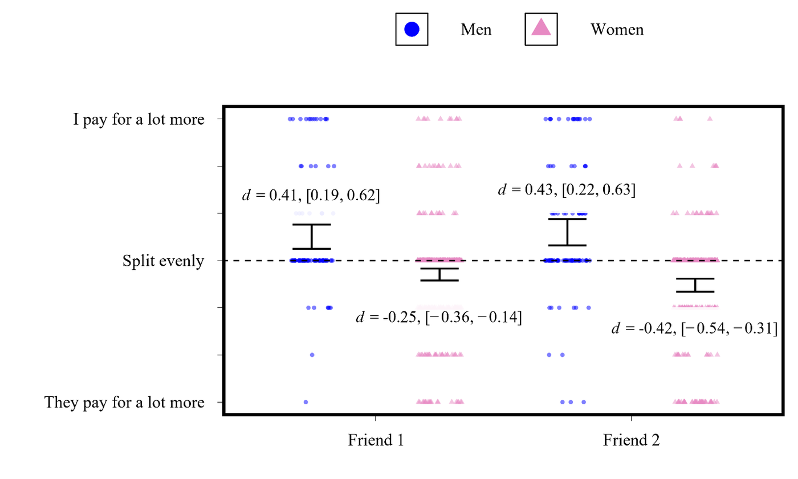
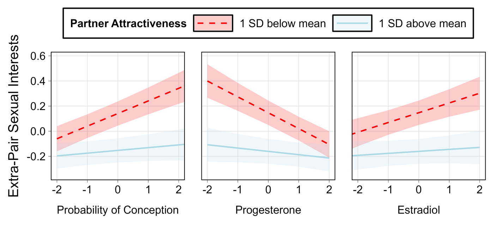
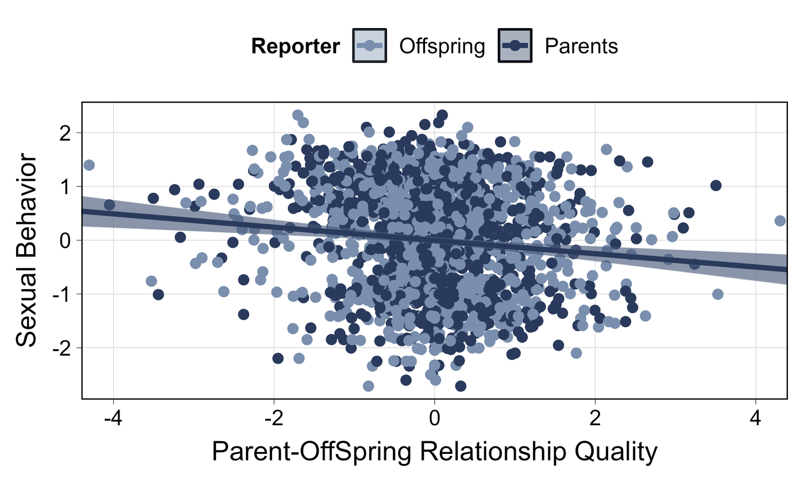
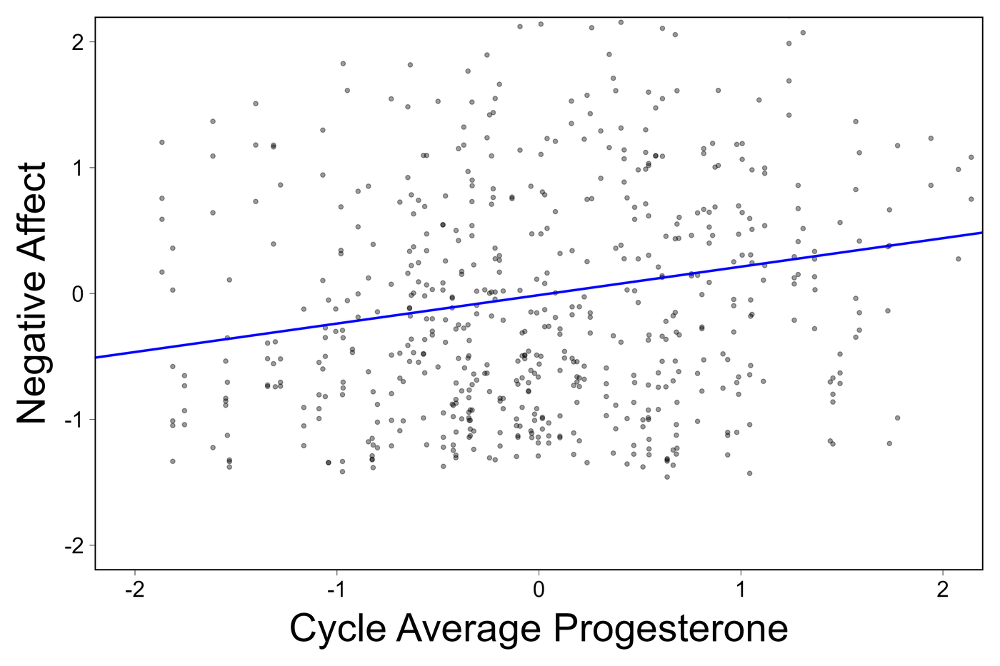
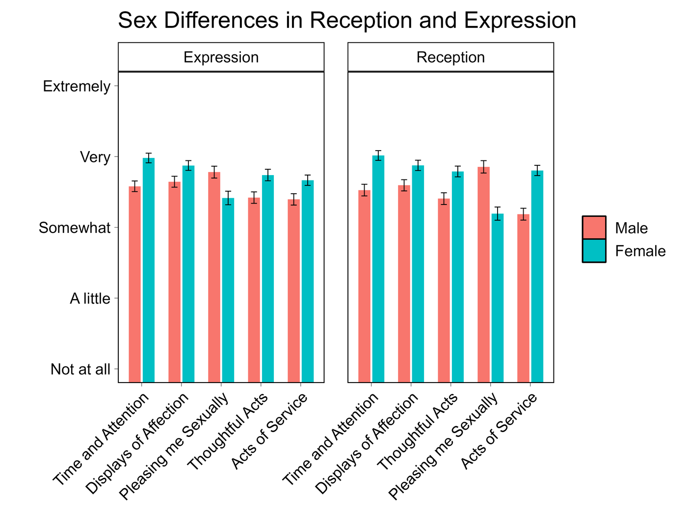

Papers
These are final submitted drafts rather than publisher proofs, so formatting and pagination will differ from the version of record. Each entry includes a short overview, the full abstract, and any conference talks or posters given on the work. Happy to talk about any of this — rdobson@unm.edu.

Men report paying for more of the bills shared with cross-sex friends than women do, across two separate friendships.
2026 Manuscript
Ryan Dobson*, William Costello*, & David M. G. Lewis — *shared first authorship
Tests whether men’s financial provisioning functions as a courtship behavior in cross-sex friendships. Across reports from men (N = 147) and women (N = 441), it did — but as a stable difference between men rather than something individual men vary across their friendships.
Cross-sex friendships are often characterized by psychological and behavioral patterns consistent with underlying mating motivations, and many romantic relationships begin as friendships. Despite the prevalence of mating outcomes in cross-sex friendships, little is known about the courtship behaviors in cross-sex friendships that translate into these outcomes. Guided by parental investment theory, sexual economics theory, and the principle that courtship behaviors are calibrated to the mate preferences of the courted sex, we elaborated and tested multiple novel predictions about a candidate courtship behavior in cross-sex friendships: financial provisioning. Findings provided robust support for half a dozen sex-differentiated predictions. First, men (N = 147) reported that they pay for more of bills shared with cross-sex friends, a perspective corroborated by reports from women (N = 441). Second, men’s, but not women’s, interest in mating with their cross-sex friends predicted their financial provisioning behavior. Third, women, but not men, perceived cross-sex friends who financial provision them to be more interested in mating with them. Notably, all these findings were explained as between-person differences rather than within-person effects. That is, men did not provision some female friends more than others depending on their attraction to those specific friends. Rather, some men consistently provisioned across their cross-sex friendships, whereas others did not. This pattern suggests that some men are inclined to view cross-sex friendships as mating opportunities whereas others do not, which may help explain some of the variation in platonic versus mating outcomes of cross-sex friendships. Collectively, these findings offer multiple new insights into the psychology underpinning cross-sex friendships.
Cross-sex friendship Courtship Mating psychology

Extra-pair sexual interest shifts with conception probability, progesterone, and estradiol — but only among women with less attractive partners.
2026 Manuscript
Ryan T. Dobson, Tran Dinh, & Steven W. Gangestad
Two preregistered daily-diary studies (total N = 484, 30 days each) testing a contested finding: that cycle shifts in women’s interest in men other than their partner depend on how attractive that partner is. The moderation replicated robustly.
For decades, researchers have sought to understand how women’s sexual psychology shifts across the menstrual cycle, from conceptive status to non-conceptive status, likely under hormonal influence of estradiol and progesterone. One key finding pertains to partnered women: A moderating influence of male partners’ sexual attractiveness on the association between conceptive status and women’s extra-pair sexual interests (attraction to men other than primary partners). Women partnered with relatively unattractive partners purportedly experience, on average, increased sexual interest in extra-pair men when conceptive in their cycles, compared to non-conceptive phases; women partnered with attractive men do not experience similar increases. A number of studies have found evidence for this association, though recent large-scale studies have yielded mixed and inconclusive evidence. More conclusive research has been needed. In the current two studies, total N = 484, naturally cycling women reported their sexual interests daily for 30 days. Analyses yield highly robust partner attractiveness moderation of the association between conceptive status and extra-pair sexual interest. Subsequent analyses support a role for both (imputed via a backward counting method) estradiol and progesterone. These findings have major implications for an understanding of how women’s sexual psychology shifts across the cycle.
Presented as
Ovulatory cycle Preregistered Intensive longitudinal

Higher parent-offspring relationship quality predicts lower-risk sexual behavior, and the association holds whether parents or offspring rated the relationship.
2026 Manuscript
Ryan T. Dobson, Tobias Edwards, Alexandros Giannelis, Geoffrey F. Miller, Magdalena J. March, Emily A. Willoughby, Robert F. Krueger, Glenn I. Roisman, & Matt McGue
Uses 617 two-offspring families — adoptive and non-adoptive — to ask whether the link between parent-offspring relationship quality and adolescent sexual behavior survives genetic confounding. It does, holding both between and within families.
Purpose: We used data from adopted and non-adopted siblings to separate genetic and environmental confounding of the effect of parent-offspring relationships on offspring’s risky sexual behavior.
Methods: Data came from the Sibling and Interaction Behavior Study (SIBS), which included 617 two-offspring families enrolled between 1998 and 2004 (53% European, 39% Korean, 8% other), with either one or two adopted offspring (n = 409) or two non-adopted offspring (n = 208). At one assessment (M age = 17.3), parents and offspring reported on parent-offspring relationship quality; at a later assessment (M age = 20.7), offspring reported their sexual behavior. Univariate biometric models tested shared environmental effects and mixed-effects models examined between- and within-family effects.
Results: Biometric modeling indicated that 15% of the variance in sexual behavior reflected shared environmental effects. Prospectively assessed parent-offspring relationship quality was significantly associated with offspring sexual behavior in both non-adopted and adopted families, eliminating the possibility of genetic confounding, and within as well as between families, consistent with a causal effect. Results were similar across both parent and offspring ratings of relationship quality.
Discussion: We found consistent evidence for an environmental explanation: higher quality parent-offspring relationships predicted that offspring were less likely to engage in risky sexual behavior. These associations existed both between families, reflecting the impact of shared environmental factors, and within families, consistent with environmental influences that operate within families. Future research should use research designs that separate potential confounding from reactive gene-environment correlation and identify mechanisms underlying this association to inform interventions.
Presented as
Behavior genetics Adoption design Sexual development

Women with higher cycle-average progesterone reported more negative affect — a between-women association, not a within-woman one.
2026 Manuscript
Ryan T. Dobson, Tran Dinh, Tania A. Reynolds, Melissa Emery Thompson, & Steven W. Gangestad
Partnered women (N = 180) across up to four in-lab sessions with assayed hormones. Women’s average progesterone predicted negative emotionality, but their own session-to-session shifts did not — which is hard to square with progesterone causing the effect.
In prior work, naturally cycling women’s progesterone levels were found to be associated with their anxiety levels and concerns about levels of social support. The current study further examined these associations. Naturally cycling partnered women (N = 180) participated in up to four in-lab sessions across a month. Each session, they filled out measures of their mood states and their concerns about investment by their primary relationship partners. Progesterone, estradiol, testosterone, and cortisol levels were assayed in session-specific urine samples. In mixed model analyses, both average levels of hormones and within-woman variations of hormones were entered as predictors of negative emotionality and concerns about partner investment. Women’s mean levels of progesterone positively predicted these outcomes, but their session-specific variations in progesterone were weakly and not significantly associated with these outcomes. Mean estradiol levels negatively and mean testosterone levels positively predicted negative emotionality. Only within-woman variations in cortisol levels predicted negative emotionality. In additional analyses, both mean follicular and luteal phase levels of progesterone predicted negative emotionality. Overall, results are not consistent with progesterone affecting negative emotionality. Perhaps negative emotionality influences progesterone levels, though additional research is needed before definitive causal conclusions can be offered.
Presented as
Hormones Ovulatory cycle Emotion
2026 Manuscript
Grace Vieth, Ryan T. Dobson, Jeffrey Simpson, & Steven W. Gangestad
A conceptual paper on the adaptive problems created by having several friends at once. Adding a friend can raise your total benefit while making each existing friend more replaceable — which undercuts the irreplaceability that sustains stake-based investment in the first place.
Recent efforts have sought to redress the relative paucity of theoretical work on the adaptive benefits that led friendships to be fundamentally important close human relationships (e.g., viewing investment in them as stake-based). Still, relatively little work has specifically addressed adaptations that function to developing, maintaining, and regulating friendship networks, generally consisting of multiple friends. This paper explores this domain. Following other scholars, we observe that a key quality of friendships that maintains stake-based investment in them is irreplaceability. Adding a friend to one’s friendship network may have marginal net benefits. Yet the added friend may not only be less irreplaceable than others in the network; the added friend may reduce the irreplaceability of other friends in the network, thereby potentially weakening stake-based investment crucial to friendship. We discuss multiple adaptive problems that arise and potential solutions to them, suggestive of adaptations that people possess for the function of developing, maintaining, and regulating friendship networks. Future directions for potentially fruitful conceptual and empirical exploration are discussed, as are potential domains of application to understanding friendship more broadly.
Friendship Fitness interdependence Theory

Women rated every love language higher than men did — except pleasing me sexually, the only one men rated higher, in both the expression and reception formats.
2024 M.S. Thesis · University of New Mexico
Ryan T. Dobson — Committee: Geoffrey Miller (chair), Tania Reynolds, Margo Hurlocker, David Lewis
A factor-analytic test of whether Gary Chapman’s five love languages hold up as a measurement model (n = 740). Exploratory analyses suggested two- and five-factor solutions were reasonable; no confirmatory model was retained.
Gary Chapman’s The 5 Love Languages (2024) is an internationally recognized popular psychology theory. In the present study (n = 740) a series of factor analyses were conducted to explore the structure of the five love languages. Both the structure of what behaviors people perceive as an expression of their partner’s love (reception), and the structure of what behaviors people perceive as an expression of their love for their partner (expression) were examined. Although exploratory factor analyses suggested that a two-factor and five-factor solution were reasonable across both reception and expression formats, confirmatory factor analyses resulted in no model being retained. A detailed overview of the analyses in relation to construct validity provides a clear path for future research to clarify the structure of the love languages. In addition, I discuss what researchers studying the love languages should aim to do and how they might best achieve those aims.
Presented as
Psychometrics Factor analysis Relationships
2022 Honors Thesis · UW–Eau Claire
Ryan T. Dobson — Committee: April Bleske-Rechek (Psychology), Kristin Schaupp (Philosophy)
My undergraduate honors thesis. Asks who you feel most threatened by when your closest opposite-sex friend forms a new relationship (n = 158). A same-sex friend interloper provoked the least jealousy — but, contrary to prediction, men and women reacted alike.
When people are asked to imagine the loss of their best same-sex friend, a same-sex interloper (versus an opposite-sex friend interloper or romantic partner interloper) elicits the most jealousy (Krems et al., 2021). In the context of being asked to imagine their best opposite-sex friend starting three new types of relationships (same-sex friendship, opposite-sex friendship, romantic relationship), I predicted that a same-sex friend interloper would elicit less jealousy than an opposite-sex friend interloper or romantic partner interloper would, because opposite-sex friends can serve as friends or potential romantic partners. In addition, because men (compared to women) are more likely to perceive their opposite-sex friend as a potential sexual partner and women (compared to men) are more likely to perceive their opposite-sex friend as a platonic friend. I predicted that men would be more jealous of the romantic partner interloper than women, and women would be more jealous of the opposite-sex friend interloper than men. In the current study (n = 158, 51% female), I found that when participants are asked to imagine a best opposite-sex friend starting new relationships, a same-sex friend interloper evoked less jealousy than an opposite-sex friend interloper or romantic partner interloper did. Contrary to expectations men and women were similarly jealous of the opposite-sex friend interloper and romantic partner interloper. One direction for future research is to separate romantic jealousy from friendship jealousy in the opposite-sex friendship context.
Jealousy Opposite-sex friendship Undergraduate
Additional work
Work I have presented at conferences that has not been written up as a manuscript. Happy to share data or discuss any of it.
Talk · NEEPS 2025
A theoretical talk on whether platonic cross-sex friendships solved recurrent adaptive problems, drawing on comparative evidence from other primates.
Poster · HBES 2024
Insights from a factor-analytic study of 136 sexual kinks in 33,668 adults.
Poster · HBES 2024
Sex-differentiated reactions to information about sex differences. With Parker Lay.
Poster · ISIR 2025
With Tobias Edwards.